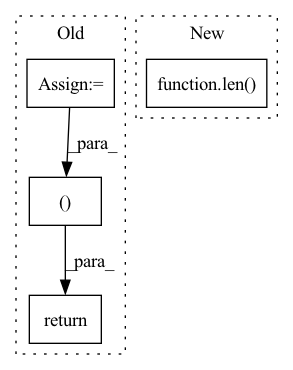

Pattern ID :1378
Before Change
preds_ = torch.transpose(preds, 1, 2)
//print(preds.size())
y = y.long()
loss = self.Loss(preds_, torch.squeeze(y))
return preds, loss
return preds
After Change
loss+=self.Loss(preds, y[:,i].squeeze().long())
preds_ = torch.stack(preds_, dim = 1)
if y is not None:
loss/=len( xs)
return preds_, loss
return preds_
In pattern: SUPERPATTERN
Frequency: 3
Non-data size: 4
Instances Fragment ID: 3973118
Project Name: dido1998/recurrent-independent-mechanisms
Commit Name: d87a800096eaa36730cbabac535eea24973f3799
Time: 2020-02-11
Author: adidolkar123@gmail.com
File Name: networks.py
M Class Name: CopyingModel
N Class Name: CopyingModel
M Method Name: forward(5)
N Method Name: forward(5)
M Parent Class: nn.Module
N Parent Class: nn.Module
M File Name: networks.py
N File Name: networks.py
M Start Line: 255
M End Line: 276
N Start Line: 291
N End Line: 313
Before Change
if not self.return_all_layers:
layer_output_list = layer_output_list[-1:]
last_state_list = last_state_list[-1:]
return layer_output_list, last_state_list
def _init_hidden(self, batch_size, image_size):
init_states = []
for i in range(self.num_layers):After Change
if not hidden_state:
hidden_state = self.get_init_states(cur_layer_input[0].size(int(not self.batch_first)))
seq_len = len( cur_layer_input)
layer_output_list = []
last_state_list = []
Fragment ID: 3973124
Project Name: openclimatefix/metnet
Commit Name: 12d0ea12a39fb28fca3d382611857f23f060b5b6
Time: 2022-02-01
Author: jacob@bieker.tech
File Name: metnet/layers/ConvLSTM.py
M Class Name: ConvLSTM
N Class Name: ConvLSTM
M Method Name: forward(3)
N Method Name: forward(3)
M Parent Class: nn.Module
N Parent Class: nn.Module
M File Name: metnet/layers/ConvLSTM.py
N File Name: metnet/layers/ConvLSTM.py
M Start Line: 149
M End Line: 188
N Start Line: 160
N End Line: 182
Before Change
kl_loss = -0.5 * torch.sum(1 + log_vars - mus.pow(2) - log_vars.exp())
// Residual Attention Loss
attn_loss = self.guided_loss(attns.transpose(-2, -1), src_lens_targets, mel_lens_targets)
total_loss = (
mel_loss + duration_loss + beta * kl_loss + attn_loss
)
return (
total_loss,
mel_loss,
duration_loss,
kl_loss,
attn_loss,
beta ,
)
After Change
mel_iter_comp = torch.sigmoid(mel_iter)
mel_iter_loss += self.sdtw_loss(mel_iter_comp, mel_targets_comp).mean()
// mel_iter_loss += self.sdtw_loss(mel_iter, mel_targets).mean()
mel_loss = (mel_iter_loss / (len( mel_iters) * mel_lens_targets)).mean()
// Duration Loss
duration_loss = self.lambda_ * (self.mae_loss(durations.sum(-1), mel_lens_targets) / src_lens_targets).mean()
Fragment ID: 3973121
Project Name: keonlee9420/parallel-tacotron2
Commit Name: 2c2f8c0876192de39c8e6d3c4f579dc68a50a678
Time: 2021-05-25
Author: keonlee9420@gmail.com
File Name: model/loss.py
M Class Name: ParallelTacotron2Loss
N Class Name: ParallelTacotron2Loss
M Method Name: forward(4)
N Method Name: forward(4)
M Parent Class: nn.Module
N Parent Class: nn.Module
M File Name: model/loss.py
N File Name: model/loss.py
M Start Line: 50
M End Line: 91
N Start Line: 48
N End Line: 86